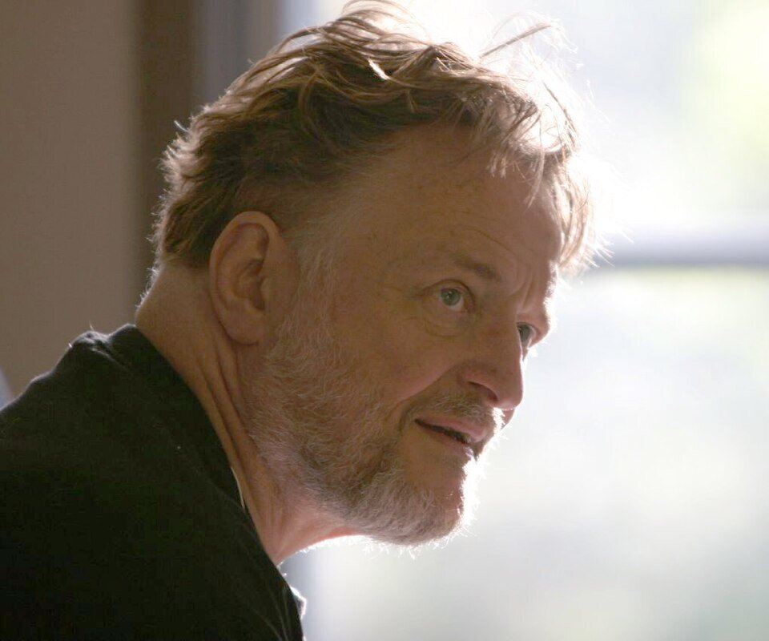
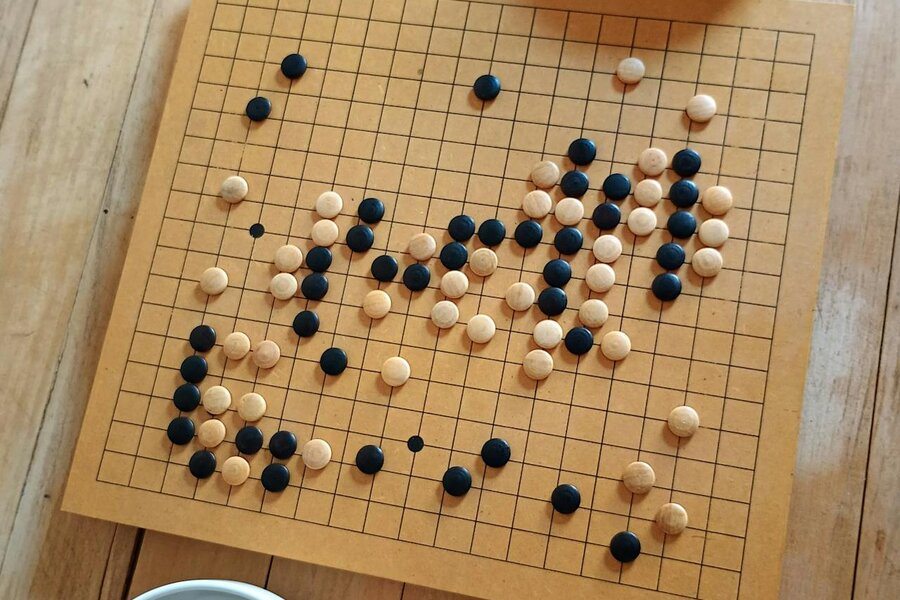

数学 × 創発
生きるか死ぬか。たった4つの条件を並べただけで、そこに移動する物体が現れ、自己複製する機械が生まれ、やがて「コンピュータ」すら出現する。設計者は、誰もいない。
Scientific American 10月号にて、Martin Gardnerのコラムでライフゲームが初公開された。
同年の世界：Apollo 13号が酸素タンク爆発を経て奇跡的に帰還。ビートルズが解散。初の「アースデイ」が開催された。
コンウェイが碁盤の上で始めた実験は、半世紀以上にわたって人工生命・複雑系科学・哲学の議論を駆動し続けている。
街を歩いていると、ふとムクドリの群れが空に渦を描くのを見る。何百羽もの鳥が、ぶつかることなく一斉に向きを変え、まるで一つの巨大な生き物のように空を流れていく。誰が指揮しているのか、と思う。
あるいは、渋滞。前の車がブレーキを踏み、その後ろが踏み、そのまた後ろが踏む。やがて何キロも離れた場所で車が止まる。最初にブレーキを踏んだ車はもう走り去っているのに、「渋滞」だけがそこに残り続ける。指揮者のいない秩序。原因のない結果。
1970年、ケンブリッジの数学者が碁盤の上で証明した。たった4つのルールだけで、秩序は勝手に生まれる。
碁盤の上で「生」と「死」のルールを手で触り、シミュレーターで無から秩序が立ち上がる瞬間を目撃する。設計者なしに複雑さが生まれるとはどういうことかを、指先と目で確かめる。
1968年のケンブリッジ大学。午後のティータイムに、数学者たちが囲碁盤を囲んでいた。ただし囲碁を打っているわけではない。黒と白の石を並べ、紙に書いたルールに従って石を置いたり取ったりする。それを何時間も、何日も繰り返す。中心にいたのはジョン・ホートン・コンウェイジョン・コンウェイ（John Horton Conway, 1937–2020）
イギリスの数学者。群論、結び目理論、数論など幅広い分野に貢献。遊び心に満ちた研究スタイルで知られた。。彼の目的は、ある古い問いに答えることだった——最も単純なルールから、自分自身を複製する機械を作れるか。

ジョン・ホートン・コンウェイ
John Horton Conway, 1937–2020
ケンブリッジ大学、のちにプリンストン大学の数学者。「数学界で最も遊び好きな天才」と呼ばれた。ライフゲームのほか、超現実数やコンウェイ群の発見でも知られる。2020年、COVID-19により逝去。
この問いの原型は1940年代にさかのぼる。ジョン・フォン・ノイマンジョン・フォン・ノイマン（1903–1957）
ハンガリー出身の数学者。コンピュータ・量子力学・ゲーム理論など20世紀の科学に計り知れない影響を与えた。が「自己複製する機械は理論的に可能か」を考え、29の状態を持つセルオートマトンセルオートマトン（cellular automaton）
格子状に並んだ「セル」が、隣のセルの状態に応じて自分の状態を変えていく数学モデル。各セルはルールに従うだけだが、全体として複雑な振る舞いが生まれる。のモデルで証明した。しかしフォン・ノイマンのモデルは膨大で、約20万個のセルが必要だった。コンウェイの野望は、それをもっと単純にすることだった。
グライダーは4世代で右下に1マスずれた同じ形に戻る。セルが「動いた」のではなく、パターンが伝播した。
ライフゲームでは、各セルは自分の周囲8マスだけを見て次の世代の生死が決まる。下の3×3グリッドで、それを1セルずつ体験してみよう。
やり方: ① まず周囲のマス（灰色）をクリックしてON/OFFを切り替える。② 赤枠の中央セルもクリックで生死を変えられる。③ 下のパネルに「次の世代で中央セルがどうなるか」がリアルタイムで表示される。
↓ 初期状態は「中央が生きていて、隣人が2つ → 生存」。周囲を押して隣人を増減させてみよう。
コンウェイのルール（B3/S23）に基づくリアルタイム判定。「B3」は誕生に隣人3が必要、「S23」は生存に隣人2〜3が必要という意味。
1970年10月、マーティン・ガードナーマーティン・ガードナー（1914–2010）
Scientific American誌の「Mathematical Games」コラムを25年間担当した数学ライター。数学の面白さを一般読者に伝える天才だった。がScientific Americanの「Mathematical Games」コラムでライフゲームを紹介した。反響はガードナーのキャリア史上最大だったという。コンウェイは「パターンが無限に成長できるか」という問いに50ドルの懸賞をかけた。わずか1ヶ月後、MITのビル・ゴスパービル・ゴスパー（Bill Gosper, 1943–）
MITのハッカー文化の中心人物の一人。ライフゲームの「グライダー銃」を発見し、50ドルの懸賞を勝ち取った。率いるチームが「グライダー銃」を発見した——30世代ごとにグライダーを1機ずつ射出し続ける構造だ。パターンは無限に成長できる。ライフゲームの世界は、想像以上に豊かだった。
"Because of Life's analogies with the rise, fall and alternations of a society of living organisms, it belongs to a growing class of what are called 'simulation games'."
ライフゲームには生物社会の興亡や変化との類似性があり、いわゆる「シミュレーションゲーム」と呼ばれる領域に属している。
— Martin Gardner, Scientific American, October 1970
✗ よくある誤解
ライフゲームは「ゲーム」だから、プレイヤーが操作して遊ぶものだ
✓ 実際は
プレイヤーがやるのは最初の配置だけ。あとは完全に自動で進む「ゼロプレイヤーゲーム」だ
✗ よくある誤解
ルールが単純だから結果も単純で予測できる
✓ 実際は
5セルの初期配置が1103世代も変化し続ける。結果を知るにはシミュレーションするしかない
✗ よくある誤解
碁盤の上の遊びで、科学的な意味はない
✓ 実際は
チューリング完全性が証明されており、理論上あらゆる計算が可能。人工生命・複雑系・哲学に直結する
ルールは覚えた。しかしルールを知っていることと、そこから何が起きるかを「知っている」ことはまったく別だ。5つのセルが斜めに移動し始める瞬間、ランダムなセルが次第に安定した構造に収束していく過程、その不思議さは見なければわからない。
下のシミュレーターで、まずプリセットボタンを押してみてほしい。各ボタンの横に「ここに注目」の一言があるので、そこを見ながら再生ボタンを押す。その次に、自分でセルをクリックして自由に配置してみよう。
プリセット — 有名パターンを試す
おすすめ: まず「グライダー」→ 次に「グライダー銃」の順に試すと、単純から複雑への飛躍が体感できる
盤面をクリックしてセルを配置し、再生ボタンで開始。盤面はトーラス構造（端と端が繋がっている）。「ランダム」を押すと、カオスから静止物体や振動子が自然に生まれていく様子を観察できる。
グライダーを眺めていると、それが「移動している」ように見える。しかし実際には、セルが生まれては死んでいるだけだ。パターンが「動いた」と言えるのはなぜだろう？ 7年で全身の細胞が入れ替わる私たちの身体もまた、「パターンの連続性」だけで成り立っている。
"It provides an example of emergence and self-organization. The game can serve as a didactic analogy, used to convey the somewhat counterintuitive notion that 'design' and 'organization' can spontaneously emerge in the absence of a designer."
ライフゲームは創発と自己組織化の一例である。設計者がいなくても「設計」と「秩序」は自発的に生じうるという反直感的な概念を伝える教育的な比喩として使える。
— Wikipedia, "Conway's Game of Life" 複数の研究者の見解を要約した記述
4つのルールは文字通り4行で書ける。しかしそこから自己複製する機械や、任意の計算を実行できるコンピュータが出現する。この飛躍はどこで起きるのか。
なぜ単純から複雑が生まれるのか — 3つのメカニズム
各セルは自分の周囲8マスしか見ない。しかし隣のセルもまた隣を見ている。このチェーンが盤面全体に広がることで、局所的なルールが大域的な構造を生む。日常の例: 渋滞もまったく同じ原理だ。各ドライバーは前の車との距離だけ見てブレーキを踏むが、その連鎖が「停止波」という全体構造を生む。誰もそれを設計していない。
2つのグライダーを衝突させると、グライダーが2つ残るわけではない。衝突の角度とタイミングによって、静止物体や振動子やまったく別の構造が生まれたりする。入力の合計から出力を予測できない。日常の例: 料理で塩を倍にしても味は倍にならない。ある量を超えると「食べられない」という質的に別の結果になる。それが非線形非線形（nonlinear）
入力を2倍にしたとき出力も2倍になるなら「線形」。ならないなら「非線形」。現実のほとんどの現象は非線形で、だから予測が難しい。ということだ。
グライダーは情報を運べる。グライダー銃はグライダーを生産できる。グライダーの衝突で論理ゲート（AND、OR、NOT）を作れる。論理ゲートを組み合わせれば計算機になる。1982年、コンウェイ、バーレカンプエルウィン・バーレカンプ（1940–2019）
UCバークレーの数学者。組合せゲーム理論の先駆者。コンウェイ、ガイとともに『Winning Ways』を著した。、ガイがこれを証明した。ライフゲームの中で、任意のコンピュータプログラムを実行できる。日常の例: レゴで家も車も作れるが、レゴブロック自体に「家」のルールはない。部品の組み合わせ方だけで機能が生まれる。
4つのルール → パターン形成 → 相互作用 → 計算能力の出現。各段階で、ルールには書かれていない性質が生まれる。これが創発創発（emergence）
個々の部品にはない性質が、部品の集まりに出現すること。水分子に「濡れている」性質はないが、水の集合は「濡れている」。だ。
年表の凡例: コンウェイとライフゲームの直接的な出来事 関連する研究・技術の進展
1940年代
フォン・ノイマンのセルオートマトン
自己複製する機械の理論的可能性を証明。29状態・約20万セルの複雑なモデルだった。
1968
コンウェイ、ルールの探索を開始
ケンブリッジのティータイムに囲碁盤で実験開始。18ヶ月以上かけて最適なルールセットを模索した。
1970年10月
Scientific Americanに掲載
マーティン・ガードナーのコラムで初公開。ガードナー史上最大の読者反響。50ドルの懸賞がかけられた。
1970年11月
グライダー銃の発見
MITのビル・ゴスパーが「Gosper Glider Gun」を発見。30世代ごとにグライダーを射出し続ける。無限成長の証明。
1982
チューリング完全性の証明
コンウェイ、バーレカンプ、ガイが『Winning Ways for your Mathematical Plays』でライフゲームが万能計算機であることを証明。
2000
チューリングマシンの実装
Paul Rendellがライフゲーム内にチューリングマシンを構築。理論が具体的な構造として示された。
2006
OTCAメタピクセル
Brice Dueが2058×2058セルで「1つのライフセル」をシミュレートする構造を発表。ライフゲームの中でライフゲームが動く。
2013
初の自己複製パターン
Dave Greeneが自分自身の完全なコピーを作り出すパターンを構築。フォン・ノイマンの夢が70年越しで実現。
2020
コンウェイ逝去
4月11日、COVID-19により82歳で死去。世界中のプログラマーがシミュレーションを動かして追悼した。
ライフゲームが突きつけるのは、「複雑さはどこから来るのか」という問いだ。4つのルールには「移動せよ」とは書かれていないのにグライダーが動く。「計算せよ」とは書かれていないのに論理ゲートが構成される。「複製せよ」とは書かれていないのに自己複製体が生まれる。すべてはルールの外から現れる。
哲学者ダニエル・デネットダニエル・デネット（1942–2024）
アメリカの哲学者・認知科学者。意識・自由意志の自然主義的な説明を追求した。ライフゲームの「宇宙」を哲学的比喩として多用した。は、ライフゲームを「意識と自由意志はどこから来るのか」という議論の比喩として使った。物理法則という「ルール」だけから設計者なしに複雑な構造が出現するなら——私たちの意識もまた、ニューロンの「ルール」から創発した何かなのかもしれない。心強くもあり、同時に少し落ち着かない考えでもある。
完全に決定論的だが結果を予測する近道は存在しない。「決まっている」と「知っている」はまったく別のことだ。
「局所的な単純ルールから、設計者なしに全体の秩序が生まれる」——この原理はライフゲームだけの話ではない。同じ構造を持つ現象が、数学にも生物学にも散らばっている。ただし入口は似ていても、出口はそれぞれ違う。
「単純から複雑へ」の原理は共通。しかし何が創発するか——計算、行動、形態、知性、臨界——はそれぞれ異なる。
ライフゲームが教えてくれるのは、複雑さの出現に設計者は必要ないということだ。同時に、完全に決定論的な世界でも「近道のない複雑さ」は存在するということだ。ルールは4つしかない。しかしそこから生まれるパターンの全容を、ルールを書いた本人すら予測できなかった。
"I hate the Game of Life. It took over my whole life."
ライフゲームが憎い。私の人生を丸ごと乗っ取られた。
— ジョン・コンウェイ、Numberphileインタビュー（2014年）
ダニエル・デネット『Freedom Evolves』（2003年）
自由意志と決定論の両立を論じた哲学書。ライフゲームの「宇宙」を繰り返し引用し、単純なルールから複雑な振る舞いが創発する過程を意識の出現の比喩として使った。
Google Easter Egg（2012年）
「Conway's Game of Life」と検索すると、検索結果ページの背景でライフゲームが動き出す。世界で最も多くの人がライフゲームを目にした瞬間かもしれない。
デイヴィッド・ブリン『Glory Season』（1993年）
ライフゲームを対戦型にアレンジしたゲームが物語の重要な要素として登場するSF小説。創発と社会構造をテーマに織り込んでいる。

コンウェイとケンブリッジの仲間たちは、パソコンが一般化する前、何日もかけて盤面のパターンを追った。
The fantastic combinations of John Conway's new solitaire game "life"
すべてはここから始まった。ガードナーの原文を読むと、50年以上前の読者が碁盤を広げてワクワクしていた空気が伝わってくる。
ライフゲームを情報理論・熱力学・宇宙論と接続する名著。単なるパズルではなく宇宙の構造への問いであることが腑に落ちる。
Self-organized criticality in the 'Game of Life'
大規模ランダム初期配置が自己組織化臨界に向かうことを示した論文。複雑系科学への入り口になる一本。
Emergent Complexity in Conway's Game of Life
ライフゲームでの自己組織化を体系的にまとめた章。「なぜ複雑さが生まれるのか」を科学的に問う視点が得られる。